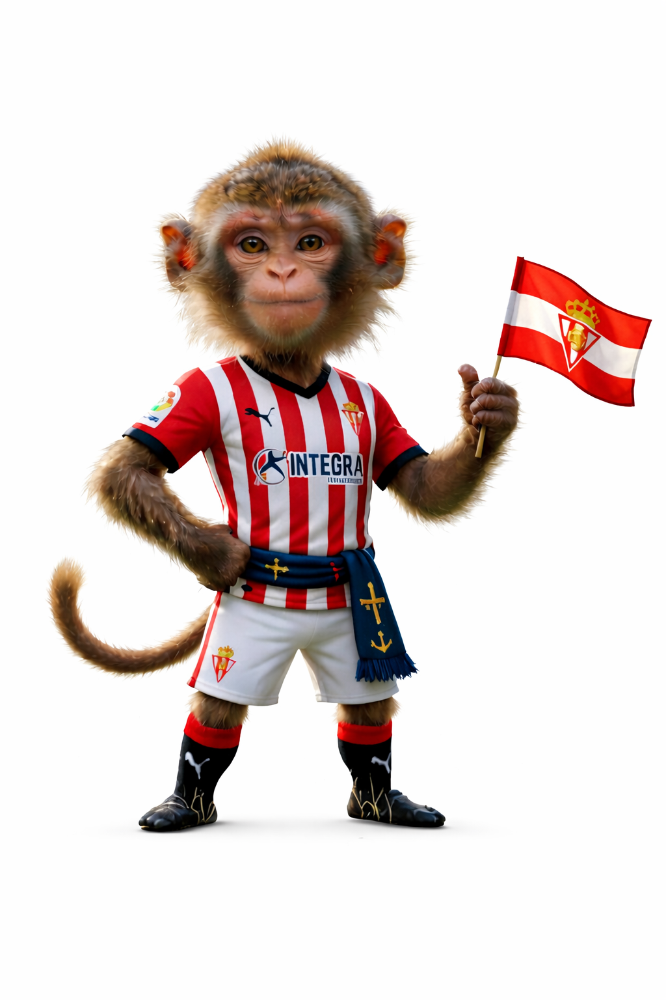

Chus
Guión
¡Muy buenas, rojiblancos! Soy el Mono Chus, la mascota más sportinguista de todo Gijón. Hoy os voy a contar la historia del equipo de mi corazón: el Real Sporting de Gijón. Agarraos bien, porque esta historia tiene más emoción que un gol en el último minuto.
Todo empezó en 1905, cuando un grupo de chavales en Gijón decidió crear un club de fútbol. Lo llamaron Sporting Club Gijonés. Con el paso del tiempo el nombre fue cambiando hasta convertirse en el que todos conocemos y queremos: Real Sporting de Gijón.
Desde aquellos primeros años, el equipo empezó a jugar en un estadio muy especial, El Molinón. Un campo con muchísima historia, donde generación tras generación de aficionados ha animado al Sporting con toda su alma.
Durante muchas décadas el Sporting luchó entre Primera y Segunda División. No siempre fue fácil, pero el club fue creciendo poco a poco y ganándose el respeto del fútbol español.
Y entonces llegaron los años dorados. A finales de los 70 el Sporting vivió uno de los momentos más grandes de su historia. En la temporada 1978-79 el equipo quedó subcampeón de la liga española. ¡Nada menos que segundos de toda España!
En aquel equipo jugaban auténticas leyendas como Quini, uno de los mayores ídolos que ha tenido el club. Sus goles hicieron vibrar a todo El Molinón.
En 1982 el estadio también fue protagonista de un momento muy famoso del fútbol mundial durante el Mundial de España. Un partido muy polémico entre Alemania Occidental y Austria se jugó en El Molinón y quedó para siempre en la historia del fútbol..
Después llegaron años difíciles. Hubo descensos, problemas económicos y temporadas complicadas. Pero el Sporting nunca dejó de luchar, porque este club tiene algo especial: una afición que nunca abandona.
Además, el Sporting tiene una de las mejores canteras de España. De aquí han salido jugadores increíbles que luego triunfaron en todo el mundo, como David Villa o Luis Enrique.
Hoy el Sporting sigue peleando, con orgullo rojiblanco y con toda su gente empujando desde la grada. Porque ser del Sporting no es solo animar a un equipo… es sentir una forma de vivir el fútbol.
Así que ya lo sabéis: pase lo que pase, en las buenas y en las malas… ¡siempre con el Sporting! ¡Puxa Sporting!
Personaje
